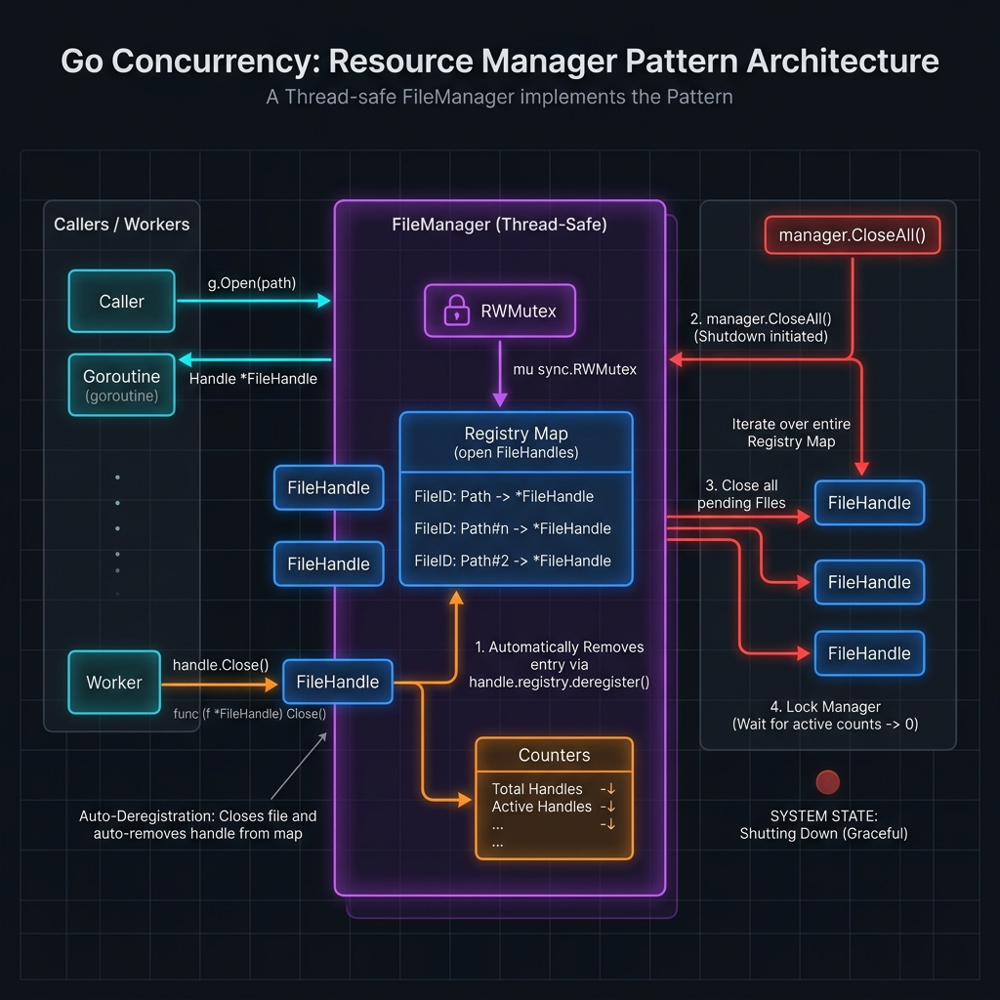

Resource Manager là gì?
★ Khái niệmResource Manager là pattern quản lý vòng đời của các tài nguyên hệ thống như database connections, file handles, network sockets, buffers, và bất kỳ đối tượng nào cần được khởi tạo → sử dụng → giải phóng một cách có kiểm soát.
Trong Go, nguyên lý này được thể hiện qua interface io.Closer, keyword defer,
và các pattern như Connection Pool, Object Pool (sync.Pool), và Lifecycle Manager.

io.Closer
Interface chuẩn của Go — mọi resource có thể đóng phải implement Close() error
defer
Keyword đảm bảo cleanup luôn chạy, kể cả khi panic — liên kết chặt với io.Closer
Connection Pool
Tái sử dụng connections đắt tiền (DB, HTTP, Redis) thay vì tạo mới mỗi request
sync.Pool
Object Pool tích hợp sẵn trong runtime — giảm GC pressure cho buffers, structs tạm thời
Khái niệm cốt lõi
Concept| Khái niệm | Interface / Type | Mục đích | Khi nào dùng |
|---|---|---|---|
| io.Closer | Close() error | Đóng resource, giải phóng OS handle | File, socket, DB conn |
| defer | keyword | Đảm bảo cleanup kể cả khi panic/return sớm | Mọi resource acquisition |
| sync.Pool | Pool{New: fn} | Object pool cho runtime — GC-aware | Buffer, encoder, tmp struct |
| context.Context | Done() <-chan struct{} | Timeout & cancellation cho resource ops | Mọi blocking I/O |
| runtime.SetFinalizer | func(obj) | Safety net cleanup khi GC thu hồi | Native handle leak protection |
defer r.Close() ngay sau khi acquire thành công.
Cơ bản: defer & io.Closer
Cơ bảnĐây là foundation của mọi Resource Manager trong Go. defer kết hợp với io.Closer
tạo ra cơ chế tự động cleanup khi function kết thúc.
package resource import ( "fmt" "io" "log" "os" ) // Resource là interface cơ bản cho mọi managed resource type Resource interface { io.Closer IsHealthy() bool } // ── Pattern 1: Single Resource với defer ────────────────────── func ReadFileBasic(path string) ([]byte, error) { // Acquire f, err := os.Open(path) if err != nil { return nil, fmt.Errorf("open %s: %w", path, err) } // Ngay sau acquire → defer close. KHÔNG để ở cuối function! defer f.Close() // ← luôn chạy kể cả khi panic return io.ReadAll(f) } // ── Pattern 2: Capture defer error (anti-pattern nếu bỏ qua) ── func WriteFileSafe(path string, data []byte) (retErr error) { f, err := os.Create(path) if err != nil { return fmt.Errorf("create: %w", err) } // Named return → capture close error vào retErr defer func() { if cerr := f.Close(); cerr != nil && retErr == nil { retErr = fmt.Errorf("close: %w", cerr) } }() _, err = f.Write(data) return err // defer chạy sau khi return này } // ── Pattern 3: Multiple resources với defer stack ───────────── func ProcessFiles(src, dst string) error { reader, err := os.Open(src) if err != nil { return fmt.Errorf("open src: %w", err) } defer reader.Close() // defer #2 → chạy sau writer, err := os.Create(dst) if err != nil { return fmt.Errorf("create dst: %w", err) } defer writer.Close() // defer #1 → chạy trước (LIFO) // Defers chạy theo thứ tự LIFO: writer.Close → reader.Close n, err := io.Copy(writer, reader) if err != nil { return fmt.Errorf("copy: %w", err) } log.Printf("copied %d bytes from %s to %s", n, src, dst) return nil }
File Handle Manager
Cơ bảnQuản lý nhiều file handles đồng thời, tự động track và cleanup khi process kết thúc hoặc có lỗi.
package filemanager import ( "bufio" "context" "fmt" "io" "os" "sync" "time" ) // FileHandle bọc os.File với metadata và auto-tracking type FileHandle struct { File *os.File Path string OpenedAt time.Time ReadOnly bool manager *FileManager // back-reference để auto-deregister } // Close đóng file VÀ tự động xoá khỏi manager func (h *FileHandle) Close() error { if h.manager != nil { h.manager.deregister(h.Path) } return h.File.Close() } // FileManager quản lý tập trung tất cả open file handles type FileManager struct { mu sync.RWMutex handles map[string]*FileHandle maxOpen int metrics FileMetrics } type FileMetrics struct { TotalOpened int64 TotalClosed int64 CurrentOpen int64 Errors int64 } func NewFileManager(maxOpen int) *FileManager { return &FileManager{ handles: make(map[string]*FileHandle), maxOpen: maxOpen, } } // Open mở file với tracking — trả về FileHandle implement io.Closer func (fm *FileManager) Open(ctx context.Context, path string, readOnly bool) (*FileHandle, error) { fm.mu.Lock() defer fm.mu.Unlock() // Kiểm tra context trước if err := ctx.Err(); err != nil { return nil, fmt.Errorf("context cancelled: %w", err) } // Kiểm tra limit if len(fm.handles) >= fm.maxOpen { return nil, fmt.Errorf("file handle limit (%d) reached", fm.maxOpen) } // Reuse nếu đã mở (same path, same mode) if h, ok := fm.handles[path]; ok && h.ReadOnly == readOnly { return h, nil } var flag int if readOnly { flag = os.O_RDONLY } else { flag = os.O_RDWR | os.O_CREATE } f, err := os.OpenFile(path, flag, 0644) if err != nil { fm.metrics.Errors++ return nil, fmt.Errorf("open %s: %w", path, err) } h := &FileHandle{ File: f, Path: path, OpenedAt: time.Now(), ReadOnly: readOnly, manager: fm, } fm.handles[path] = h fm.metrics.TotalOpened++ fm.metrics.CurrentOpen++ return h, nil } func (fm *FileManager) deregister(path string) { fm.mu.Lock() defer fm.mu.Unlock() delete(fm.handles, path) fm.metrics.TotalClosed++ fm.metrics.CurrentOpen-- } // CloseAll đóng tất cả handles — dùng khi shutdown func (fm *FileManager) CloseAll() error { fm.mu.Lock() defer fm.mu.Unlock() var errs []error for path, h := range fm.handles { if err := h.File.Close(); err != nil { errs = append(errs, fmt.Errorf("close %s: %w", path, err)) } delete(fm.handles, path) } if len(errs) > 0 { return fmt.Errorf("%d files failed to close: %v", len(errs), errs) } return nil } // Metrics trả về snapshot metrics hiện tại func (fm *FileManager) Metrics() FileMetrics { fm.mu.RLock() defer fm.mu.RUnlock() return fm.metrics } // ── Usage Example ───────────────────────────────────────────── func ExampleUsage(ctx context.Context) error { fm := NewFileManager(100) defer fm.CloseAll() // safety net — đóng tất cả khi exit h, err := fm.Open(ctx, "/tmp/data.csv", true) if err != nil { return err } defer h.Close() // preferred: close ASAP thay vì đợi CloseAll scanner := bufio.NewScanner(h.File) for scanner.Scan() { // process line... _ = scanner.Text() } return scanner.Err() }
Generic Connection Pool
Nâng caoConnection Pool là trái tim của mọi Resource Manager trong production. Tái sử dụng connections thay vì tạo mới → giảm latency và tải hệ thống đáng kể.
package pool import ( "context" "errors" "fmt" "sync" "sync/atomic" "time" ) // Conn là constraint cho bất kỳ connection type nào type Conn[T any] struct { Value T CreatedAt time.Time LastUsedAt time.Time UsageCount uint64 pool *Pool[T] } // Release trả connection về pool — gọi sau khi dùng xong func (c *Conn[T]) Release() { c.LastUsedAt = time.Now() c.UsageCount++ c.pool.put(c) } // Config cấu hình pool type Config[T any] struct { MaxSize int // max connections MinIdle int // luôn giữ sẵn N conn MaxIdleTime time.Duration // close conn idle quá lâu MaxLifetime time.Duration // max tuổi thọ một conn AcquireTimeout time.Duration Factory func(context.Context) (T, error) Validate func(T) bool // health check Destroy func(T) // cleanup khi discard } // Pool là generic connection pool thread-safe type Pool[T any] struct { cfg Config[T] idle chan *Conn[T] mu sync.Mutex total int32 // atomic: tổng connections đang tồn tại waiting int32 // atomic: số goroutines đang chờ closed bool stats PoolStats } type PoolStats struct { AcquireCount int64 ReleaseCount int64 CreateCount int64 DestroyCount int64 WaitDuration time.Duration } var ( ErrPoolClosed = errors.New("pool is closed") ErrPoolExhausted = errors.New("pool exhausted: no connections available") ) func New[T any](cfg Config[T]) (*Pool[T], error) { if cfg.MaxSize <= 0 { return nil, errors.New("MaxSize must be > 0") } if cfg.Factory == nil { return nil, errors.New("Factory is required") } p := &Pool[T]{ cfg: cfg, idle: make(chan *Conn[T], cfg.MaxSize), } // Pre-warm MinIdle connections ctx := context.Background() for i := 0; i < cfg.MinIdle; i++ { conn, err := p.create(ctx) if err != nil { _ = p.Close() return nil, fmt.Errorf("pre-warm conn %d: %w", i, err) } p.idle <- conn } go p.maintainMinIdle() return p, nil } // Acquire lấy connection từ pool với context timeout func (p *Pool[T]) Acquire(ctx context.Context) (*Conn[T], error) { if p.closed { return nil, ErrPoolClosed } start := time.Now() atomic.AddInt32(&p.waiting, 1) defer func() { atomic.AddInt32(&p.waiting, -1) p.stats.WaitDuration += time.Since(start) p.stats.AcquireCount++ }() // 1. Thử lấy ngay từ idle pool (non-blocking) select { case conn := <-p.idle: if p.isValid(conn) { return conn, nil } // conn không còn valid → discard & tạo mới p.destroy(conn) default: } // 2. Tạo mới nếu chưa đạt max if atomic.LoadInt32(&p.total) < int32(p.cfg.MaxSize) { return p.create(ctx) } // 3. Wait với timeout acquireCtx := ctx if p.cfg.AcquireTimeout > 0 { var cancel context.CancelFunc acquireCtx, cancel = context.WithTimeout(ctx, p.cfg.AcquireTimeout) defer cancel() } select { case conn := <-p.idle: if p.isValid(conn) { return conn, nil } p.destroy(conn) return p.create(ctx) case <-acquireCtx.Done(): return nil, fmt.Errorf("acquire timeout: %w", acquireCtx.Err()) } } func (p *Pool[T]) create(ctx context.Context) (*Conn[T], error) { val, err := p.cfg.Factory(ctx) if err != nil { return nil, fmt.Errorf("factory: %w", err) } atomic.AddInt32(&p.total, 1) p.stats.CreateCount++ return &Conn[T]{ Value: val, CreatedAt: time.Now(), pool: p, }, nil } func (p *Pool[T]) put(conn *Conn[T]) { if p.closed || !p.isValid(conn) { p.destroy(conn) return } select { case p.idle <- conn: p.stats.ReleaseCount++ default: p.destroy(conn) // pool đầy → discard } } func (p *Pool[T]) isValid(conn *Conn[T]) bool { if p.cfg.MaxLifetime > 0 && time.Since(conn.CreatedAt) > p.cfg.MaxLifetime { return false } if p.cfg.MaxIdleTime > 0 && time.Since(conn.LastUsedAt) > p.cfg.MaxIdleTime { return false } if p.cfg.Validate != nil { return p.cfg.Validate(conn.Value) } return true } func (p *Pool[T]) destroy(conn *Conn[T]) { atomic.AddInt32(&p.total, -1) p.stats.DestroyCount++ if p.cfg.Destroy != nil { p.cfg.Destroy(conn.Value) } } func (p *Pool[T]) maintainMinIdle() { ticker := time.NewTicker(30 * time.Second) defer ticker.Stop() for range ticker.C { if p.closed { return } current := int(atomic.LoadInt32(&p.total)) for i := current; i < p.cfg.MinIdle; i++ { conn, err := p.create(context.Background()) if err == nil { p.idle <- conn } } } } func (p *Pool[T]) Close() error { p.mu.Lock() defer p.mu.Unlock() p.closed = true close(p.idle) for conn := range p.idle { p.destroy(conn) } return nil } func (p *Pool[T]) Stats() PoolStats { return p.stats }
Database Connection Manager
Nâng caoBọc database/sql với observability, retry logic, và transaction-safe connection management.
package dbmanager import ( "context" "database/sql" "fmt" "log/slog" "time" _ "github.com/lib/pq" // PostgreSQL driver ) type DBConfig struct { DSN string MaxOpenConns int // default: 25 MaxIdleConns int // default: 5 ConnMaxLifetime time.Duration // default: 30m ConnMaxIdleTime time.Duration // default: 5m PingTimeout time.Duration // default: 3s } func (c *DBConfig) applyDefaults() { if c.MaxOpenConns == 0 { c.MaxOpenConns = 25 } if c.MaxIdleConns == 0 { c.MaxIdleConns = 5 } if c.ConnMaxLifetime == 0 { c.ConnMaxLifetime = 30 * time.Minute } if c.ConnMaxIdleTime == 0 { c.ConnMaxIdleTime = 5 * time.Minute } if c.PingTimeout == 0 { c.PingTimeout = 3 * time.Second } } type DBManager struct { db *sql.DB cfg DBConfig logger *slog.Logger } func NewDBManager(cfg DBConfig, logger *slog.Logger) (*DBManager, error) { cfg.applyDefaults() db, err := sql.Open("postgres", cfg.DSN) if err != nil { return nil, fmt.Errorf("sql.Open: %w", err) } // Cấu hình pool của database/sql db.SetMaxOpenConns(cfg.MaxOpenConns) db.SetMaxIdleConns(cfg.MaxIdleConns) db.SetConnMaxLifetime(cfg.ConnMaxLifetime) db.SetConnMaxIdleTime(cfg.ConnMaxIdleTime) m := &DBManager{db: db, cfg: cfg, logger: logger} // Verify connection ngay tại startup if err := m.Ping(context.Background()); err != nil { _ = db.Close() return nil, fmt.Errorf("initial ping: %w", err) } logger.Info("database connected", "max_open", cfg.MaxOpenConns, "max_idle", cfg.MaxIdleConns, ) return m, nil } func (m *DBManager) Ping(ctx context.Context) error { pingCtx, cancel := context.WithTimeout(ctx, m.cfg.PingTimeout) defer cancel() return m.db.PingContext(pingCtx) } // WithTx thực thi fn trong transaction, tự động rollback khi lỗi func (m *DBManager) WithTx(ctx context.Context, fn func(*sql.Tx) error) (retErr error) { tx, err := m.db.BeginTx(ctx, &sql.TxOptions{ Isolation: sql.LevelRepeatableRead, }) if err != nil { return fmt.Errorf("begin tx: %w", err) } defer func() { if p := recover(); p != nil { _ = tx.Rollback() panic(p) // re-panic sau rollback } if retErr != nil { if rbErr := tx.Rollback(); rbErr != nil { m.logger.Error("rollback failed", "err", rbErr) } } }() if err := fn(tx); err != nil { return err // defer rollback sẽ chạy } return tx.Commit() } // Stats trả về database pool statistics func (m *DBManager) Stats() sql.DBStats { return m.db.Stats() } // Close đóng tất cả connections trong pool func (m *DBManager) Close() error { return m.db.Close() } // ── Usage ───────────────────────────────────────────────────── type UserRepo struct{ dbm *DBManager } func (r *UserRepo) TransferFunds(ctx context.Context, from, to int64, amount float64) error { return r.dbm.WithTx(ctx, func(tx *sql.Tx) error { _, err := tx.ExecContext(ctx, "UPDATE accounts SET balance = balance - $1 WHERE id = $2", amount, from) if err != nil { return fmt.Errorf("debit %d: %w", from, err) } _, err = tx.ExecContext(ctx, "UPDATE accounts SET balance = balance + $1 WHERE id = $2", amount, to) return err }) }
HTTP Client Resource Manager
Nâng caopackage httpclient import ( "context" "fmt" "io" "net" "net/http" "time" ) type HTTPClientConfig struct { MaxIdleConns int // default: 100 MaxIdleConnsPerHost int // default: 10 MaxConnsPerHost int // 0 = unlimited IdleConnTimeout time.Duration // default: 90s DialTimeout time.Duration // default: 30s TLSHandshakeTimeout time.Duration // default: 10s RequestTimeout time.Duration // default: 30s DisableKeepAlives bool // false = reuse conns } func DefaultHTTPClientConfig() HTTPClientConfig { return HTTPClientConfig{ MaxIdleConns: 100, MaxIdleConnsPerHost: 10, IdleConnTimeout: 90 * time.Second, DialTimeout: 30 * time.Second, TLSHandshakeTimeout: 10 * time.Second, RequestTimeout: 30 * time.Second, } } // NewHTTPClient tạo http.Client với transport được cấu hình tối ưu func NewHTTPClient(cfg HTTPClientConfig) *http.Client { transport := &http.Transport{ Proxy: http.ProxyFromEnvironment, DialContext: (&net.Dialer{ Timeout: cfg.DialTimeout, KeepAlive: 30 * time.Second, }).DialContext, MaxIdleConns: cfg.MaxIdleConns, MaxIdleConnsPerHost: cfg.MaxIdleConnsPerHost, MaxConnsPerHost: cfg.MaxConnsPerHost, IdleConnTimeout: cfg.IdleConnTimeout, TLSHandshakeTimeout: cfg.TLSHandshakeTimeout, ExpectContinueTimeout: 1 * time.Second, DisableKeepAlives: cfg.DisableKeepAlives, ForceAttemptHTTP2: true, } return &http.Client{ Transport: transport, Timeout: cfg.RequestTimeout, } } // ── CRITICAL: Drain response body để reuse connection ───────── func DoRequest(ctx context.Context, client *http.Client, req *http.Request) ([]byte, error) { req = req.WithContext(ctx) resp, err := client.Do(req) if err != nil { return nil, fmt.Errorf("do request: %w", err) } // PHẢI drain + close body — nếu không connection sẽ không được reuse! defer func() { _, _ = io.Copy(io.Discard, resp.Body) resp.Body.Close() }() if resp.StatusCode < 200 || resp.StatusCode >= 300 { return nil, fmt.Errorf("HTTP %d: %s", resp.StatusCode, resp.Status) } return io.ReadAll(resp.Body) }
resp.Body, Go's HTTP transport sẽ không thể
reuse connection đó. Sau nhiều request, bạn sẽ cạn kiệt file descriptors và gặp lỗi
too many open files.
sync.Pool — Object Reuse Pattern
Nâng caosync.Pool là built-in object pool của Go runtime. Khác với connection pool thông thường,
sync.Pool được GC quản lý — objects có thể bị thu hồi bất cứ lúc nào khi GC chạy.
package objpool import ( "bytes" "encoding/json" "sync" ) // ── Pattern 1: Buffer Pool ───────────────────────────────────── var bufPool = &sync.Pool{ New: func() any { // Tạo buffer với capacity ban đầu 4KB return bytes.NewBuffer(make([]byte, 0, 4096)) }, } func AcquireBuffer() *bytes.Buffer { return bufPool.Get().(*bytes.Buffer) } func ReleaseBuffer(buf *bytes.Buffer) { buf.Reset() // PHẢI reset trước khi trả lại pool bufPool.Put(buf) } // ── Pattern 2: Type-safe Pool wrapper (Go 1.18+) ─────────────── type TypedPool[T any] struct { p sync.Pool } func NewTypedPool[T any](factory func() *T) *TypedPool[T] { return &TypedPool[T]{ p: sync.Pool{New: func() any { return factory() }}, } } func (tp *TypedPool[T]) Get() *T { return tp.p.Get().(*T) } func (tp *TypedPool[T]) Put(v *T) { tp.p.Put(v) } // ── Pattern 3: JSON Encoder Pool (giảm 70% allocations) ─────── type encoderBuf struct { buf *bytes.Buffer enc *json.Encoder } var encoderPool = sync.Pool{ New: func() any { buf := &bytes.Buffer{} return &encoderBuf{buf: buf, enc: json.NewEncoder(buf)} }, } func MarshalJSON(v any) ([]byte, error) { eb := encoderPool.Get().(*encoderBuf) defer func() { eb.buf.Reset() encoderPool.Put(eb) }() if err := eb.enc.Encode(v); err != nil { return nil, err } // Bỏ trailing newline mà json.Encoder thêm vào result := make([]byte, eb.buf.Len()-1) copy(result, eb.buf.Bytes()) return result, nil } // ── Pattern 4: Slice Pool (tránh append allocations) ────────── var slicePool = sync.Pool{ New: func() any { s := make([]byte, 0, 64*1024) // 64KB return &s }, } func GetSlice() *[]byte { return slicePool.Get().(*[]byte) } func PutSlice(s *[]byte) { *s = (*s)[:0] // reset length, giữ capacity slicePool.Put(s) }
Lifecycle Manager — Orchestrate nhiều Resources
Nâng caoQuản lý toàn bộ vòng đời của application: khởi tạo resources theo thứ tự, graceful shutdown theo thứ tự đảo ngược.
package lifecycle import ( "context" "fmt" "log/slog" "os" "os/signal" "sync" "syscall" "time" ) // Hook định nghĩa một lifecycle hook với start/stop type Hook struct { Name string OnStart func(context.Context) error OnStop func(context.Context) error } // Manager điều phối startup & shutdown theo thứ tự type Manager struct { hooks []Hook startTimeout time.Duration shutdownTimeout time.Duration logger *slog.Logger mu sync.Mutex started []int // index của những hook đã start thành công } func New(opts ...Option) *Manager { m := &Manager{ startTimeout: 30 * time.Second, shutdownTimeout: 15 * time.Second, logger: slog.Default(), } for _, o := range opts { o(m) } return m } type Option func(*Manager) func WithStartTimeout(d time.Duration) Option { return func(m *Manager) { m.startTimeout = d } } func WithLogger(l *slog.Logger) Option { return func(m *Manager) { m.logger = l } } // Register thêm hook — thứ tự đăng ký = thứ tự start func (m *Manager) Register(hook Hook) { m.mu.Lock() defer m.mu.Unlock() m.hooks = append(m.hooks, hook) } // Run khởi chạy tất cả hooks, chờ signal, rồi shutdown func (m *Manager) Run() error { startCtx, startCancel := context.WithTimeout( context.Background(), m.startTimeout) defer startCancel() // Startup theo thứ tự for i, hook := range m.hooks { m.logger.Info("starting", "component", hook.Name) if hook.OnStart != nil { if err := hook.OnStart(startCtx); err != nil { // Rollback: dừng những cái đã start m.stopStarted() return fmt.Errorf("start %s: %w", hook.Name, err) } } m.started = append(m.started, i) m.logger.Info("started", "component", hook.Name) } // Chờ OS signal sigCh := make(chan os.Signal, 1) signal.Notify(sigCh, syscall.SIGINT, syscall.SIGTERM) sig := <-sigCh m.logger.Info("received signal, shutting down", "signal", sig) return m.stopStarted() } // stopStarted dừng tất cả hooks đã start theo thứ tự LIFO func (m *Manager) stopStarted() error { stopCtx, cancel := context.WithTimeout( context.Background(), m.shutdownTimeout) defer cancel() var errs []error // Đảo ngược thứ tự for i := len(m.started) - 1; i >= 0; i-- { hook := m.hooks[m.started[i]] m.logger.Info("stopping", "component", hook.Name) if hook.OnStop != nil { if err := hook.OnStop(stopCtx); err != nil { errs = append(errs, fmt.Errorf("stop %s: %w", hook.Name, err)) } } } if len(errs) > 0 { return fmt.Errorf("shutdown errors: %v", errs) } return nil }
Circuit Breaker cho Resource Pool
★ ExpertNgăn chặn cascade failure khi resource (DB, Redis, API) bị quá tải — tự động mở mạch khi error rate vượt ngưỡng và thử lại sau cooldown period.
package circuitbreaker import ( "context" "errors" "fmt" "sync" "sync/atomic" "time" ) type State int32 const ( StateClosed State = iota // hoạt động bình thường StateOpen // từ chối tất cả requests StateHalfOpen // cho phép một probe request ) var ErrCircuitOpen = errors.New("circuit breaker is open") type CBConfig struct { MaxFailures int // số lỗi liên tiếp để mở mạch ResetTimeout time.Duration // thời gian chờ trước khi thử lại HalfOpenMaxReq int // số probes trong half-open state OnStateChange func(from, to State) } type CircuitBreaker struct { cfg CBConfig state int32 // atomic State failures int32 // atomic failure counter halfOpenReq int32 // atomic counter cho half-open probes openedAt atomic.Value // stores time.Time mu sync.Mutex } func New(cfg CBConfig) *CircuitBreaker { if cfg.MaxFailures <= 0 { cfg.MaxFailures = 5 } if cfg.ResetTimeout == 0 { cfg.ResetTimeout = 30 * time.Second } if cfg.HalfOpenMaxReq == 0 { cfg.HalfOpenMaxReq = 1 } return &CircuitBreaker{cfg: cfg} } func (cb *CircuitBreaker) State() State { return State(atomic.LoadInt32(&cb.state)) } // Execute chạy fn qua circuit breaker func (cb *CircuitBreaker) Execute(ctx context.Context, fn func(context.Context) error) error { if err := cb.allow(); err != nil { return err } err := fn(ctx) cb.record(err) return err } func (cb *CircuitBreaker) allow() error { switch State(atomic.LoadInt32(&cb.state)) { case StateClosed: return nil case StateOpen: // Kiểm tra timeout để chuyển sang half-open t, _ := cb.openedAt.Load().(time.Time) if time.Since(t) > cb.cfg.ResetTimeout { cb.transitionTo(StateHalfOpen) return nil } return fmt.Errorf("%w (retry after %v)", ErrCircuitOpen, t.Add(cb.cfg.ResetTimeout).Sub(time.Now()).Truncate(time.Second)) case StateHalfOpen: // Chỉ cho phép HalfOpenMaxReq probes n := atomic.AddInt32(&cb.halfOpenReq, 1) if n > int32(cb.cfg.HalfOpenMaxReq) { atomic.AddInt32(&cb.halfOpenReq, -1) return ErrCircuitOpen } return nil } return nil } func (cb *CircuitBreaker) record(err error) { if err == nil { if State(atomic.LoadInt32(&cb.state)) == StateHalfOpen { cb.transitionTo(StateClosed) // probe thành công → đóng mạch } else { atomic.StoreInt32(&cb.failures, 0) // reset counter } return } f := atomic.AddInt32(&cb.failures, 1) if int(f) >= cb.cfg.MaxFailures { cb.transitionTo(StateOpen) } } func (cb *CircuitBreaker) transitionTo(to State) { cb.mu.Lock() defer cb.mu.Unlock() from := State(atomic.LoadInt32(&cb.state)) if from == to { return } atomic.StoreInt32(&cb.state, int32(to)) if to == StateOpen { cb.openedAt.Store(time.Now()) atomic.StoreInt32(&cb.failures, 0) } if to == StateClosed { atomic.StoreInt32(&cb.failures, 0) atomic.StoreInt32(&cb.halfOpenReq, 0) } if cb.cfg.OnStateChange != nil { cb.cfg.OnStateChange(from, to) } }
Real-World: Hệ thống Resource Manager hoàn chỉnh
★ ExpertKết hợp tất cả patterns để xây dựng một Resource Manager hoàn chỉnh cho microservice: quản lý DB pool, Redis, HTTP clients với health check, circuit breaker, và graceful shutdown.
package app import ( "context" "database/sql" "fmt" "log/slog" "net/http" "sync" "time" "github.com/redis/go-redis/v9" ) // ResourceManager tổng hợp tất cả resources của application type ResourceManager struct { DB *sql.DB Redis *redis.Client HTTPClient *http.Client FileMgr *FileManager dbCB *CircuitBreaker redisCB *CircuitBreaker healthTicker *time.Ticker stopHealth chan struct{} mu sync.RWMutex logger *slog.Logger } type AppConfig struct { DatabaseDSN string RedisAddr string MaxDBConns int MaxRedisConns int MaxFileHandles int HealthInterval time.Duration } func NewResourceManager(cfg AppConfig, logger *slog.Logger) (*ResourceManager, error) { // Defaults if cfg.MaxDBConns == 0 { cfg.MaxDBConns = 25 } if cfg.MaxRedisConns == 0 { cfg.MaxRedisConns = 50 } if cfg.MaxFileHandles == 0 { cfg.MaxFileHandles = 100 } if cfg.HealthInterval == 0 { cfg.HealthInterval = 30 * time.Second } rm := &ResourceManager{ stopHealth: make(chan struct{}), logger: logger, } // ── 1. Database ────────────────────────────────────────────── db, err := sql.Open("postgres", cfg.DatabaseDSN) if err != nil { return nil, fmt.Errorf("open db: %w", err) } db.SetMaxOpenConns(cfg.MaxDBConns) db.SetMaxIdleConns(cfg.MaxDBConns / 5) db.SetConnMaxLifetime(30 * time.Minute) db.SetConnMaxIdleTime(5 * time.Minute) pingCtx, cancel := context.WithTimeout(context.Background(), 5*time.Second) defer cancel() if err := db.PingContext(pingCtx); err != nil { _ = db.Close() return nil, fmt.Errorf("db ping: %w", err) } rm.DB = db rm.dbCB = New(CBConfig{MaxFailures: 5, ResetTimeout: 30 * time.Second, OnStateChange: func(from, to State) { logger.Warn("db circuit breaker state change", "from", from, "to", to) }, }) logger.Info("database connected") // ── 2. Redis ───────────────────────────────────────────────── rdb := redis.NewClient(&redis.Options{ Addr: cfg.RedisAddr, PoolSize: cfg.MaxRedisConns, MinIdleConns: cfg.MaxRedisConns / 10, MaxIdleTime: 5 * time.Minute, ConnMaxLifetime: 30 * time.Minute, DialTimeout: 5 * time.Second, ReadTimeout: 3 * time.Second, WriteTimeout: 3 * time.Second, }) if err := rdb.Ping(context.Background()).Err(); err != nil { _ = db.Close() _ = rdb.Close() return nil, fmt.Errorf("redis ping: %w", err) } rm.Redis = rdb rm.redisCB = New(CBConfig{MaxFailures: 3, ResetTimeout: 10 * time.Second}) logger.Info("redis connected") // ── 3. HTTP Client ─────────────────────────────────────────── rm.HTTPClient = NewHTTPClient(DefaultHTTPClientConfig()) // ── 4. File Manager ────────────────────────────────────────── rm.FileMgr = NewFileManager(cfg.MaxFileHandles) // ── 5. Start health check loop ─────────────────────────────── rm.healthTicker = time.NewTicker(cfg.HealthInterval) go rm.runHealthChecks() return rm, nil } func (rm *ResourceManager) runHealthChecks() { for { select { case <-rm.healthTicker.C: ctx, cancel := context.WithTimeout(context.Background(), 5*time.Second) if err := rm.DB.PingContext(ctx); err != nil { rm.logger.Error("db health check failed", "err", err) } if err := rm.Redis.Ping(ctx).Err(); err != nil { rm.logger.Error("redis health check failed", "err", err) } cancel() // Log pool stats dbStats := rm.DB.Stats() rm.logger.Debug("pool stats", "db_open", dbStats.OpenConnections, "db_idle", dbStats.Idle, "db_in_use", dbStats.InUse, ) case <-rm.stopHealth: return } } } // QueryDB thực thi query qua circuit breaker func (rm *ResourceManager) QueryDB(ctx context.Context, query string, args ...any) (*sql.Rows, error) { var rows *sql.Rows err := rm.dbCB.Execute(ctx, func(ctx context.Context) error { var e error rows, e = rm.DB.QueryContext(ctx, query, args...) return e }) return rows, err } // Close graceful shutdown toàn bộ resources func (rm *ResourceManager) Close() error { // Stop health checks rm.healthTicker.Stop() close(rm.stopHealth) var errs []error // Đóng theo thứ tự ngược lại (LIFO) if err := rm.FileMgr.CloseAll(); err != nil { errs = append(errs, fmt.Errorf("file manager: %w", err)) } if err := rm.Redis.Close(); err != nil { errs = append(errs, fmt.Errorf("redis: %w", err)) } if err := rm.DB.Close(); err != nil { errs = append(errs, fmt.Errorf("database: %w", err)) } rm.logger.Info("all resources closed") if len(errs) > 0 { return fmt.Errorf("close errors: %v", errs) } return nil }
main.go — Kết hợp với Lifecycle Manager
package main import ( "log/slog" "os" ) func main() { logger := slog.New(slog.NewJSONHandler(os.Stdout, &slog.HandlerOptions{ Level: slog.LevelInfo, })) rm, err := NewResourceManager(AppConfig{ DatabaseDSN: os.Getenv("DATABASE_URL"), RedisAddr: os.Getenv("REDIS_ADDR"), MaxDBConns: 25, MaxRedisConns: 50, HealthInterval: 30, }, logger) if err != nil { logger.Error("failed to init resources", "err", err) os.Exit(1) } // Đảm bảo cleanup kể cả khi panic defer func() { if err := rm.Close(); err != nil { logger.Error("shutdown error", "err", err) } }() // Khởi chạy lifecycle manager với signal handling mgr := New( WithLogger(logger), WithStartTimeout(30), ) mgr.Register(Hook{ Name: "http-server", OnStart: startHTTPServer, OnStop: stopHTTPServer, }) if err := mgr.Run(); err != nil { logger.Error("lifecycle error", "err", err) os.Exit(1) } }
Bảng so sánh nhanh
| Pattern | Khi nào dùng | Ưu điểm | Lưu ý |
|---|---|---|---|
defer Close() |
Mọi resource acquisition | Đơn giản, đảm bảo cleanup | Không capture error nếu dùng trực tiếp |
database/sql pool |
SQL databases | Built-in, battle-tested | Cần tune MaxOpenConns cho từng service |
| Custom Pool (Generic) | Redis, gRPC, custom TCP | Full control, health check | Phức tạp hơn, cần test kỹ |
sync.Pool |
Buffers, temp objects | Zero-cost nếu GC tái sử dụng | Không phù hợp cho stateful resources |
| Circuit Breaker | External service calls | Tránh cascade failure | Cần tune threshold theo từng service SLA |
| Lifecycle Manager | Application startup/shutdown | Orderly cleanup, signal handling | Overkill cho services nhỏ |
- Luôn
defer Close()ngay sau acquire thành công — không để ở cuối function - Dùng named returns để capture
Close()errors khi ghi file - Set
MaxOpenConns< databasemax_connections(thường 80%) - Luôn drain và close
http.Response.Bodyđể reuse TCP connection - Reset object về zero-value trước khi
sync.Pool.Put() - Implement
runtime.SetFinalizernhư safety net cho native handles - Graceful shutdown theo thứ tự LIFO (last opened → first closed)
References & Source Guide
Recommended Books & Articles
- The Go Programming Language (Donovan & Kernighan) — Ch.5 Functions, Ch.8 Goroutines & Channels
- 100 Go Mistakes (Teiva Harsanyi) — Mistake #45-#48 về resource leak patterns
- Dave Cheney — "Constant errors" — Error design cho resource operations
- Go Diagnostics — pprof để detect resource leaks
- Ardan Labs — Concurrency Trap: Incomplete Work